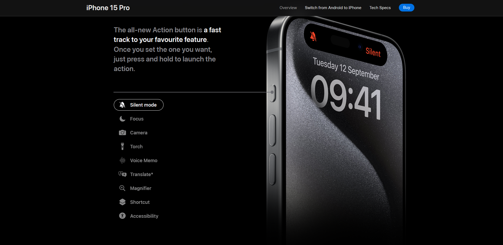
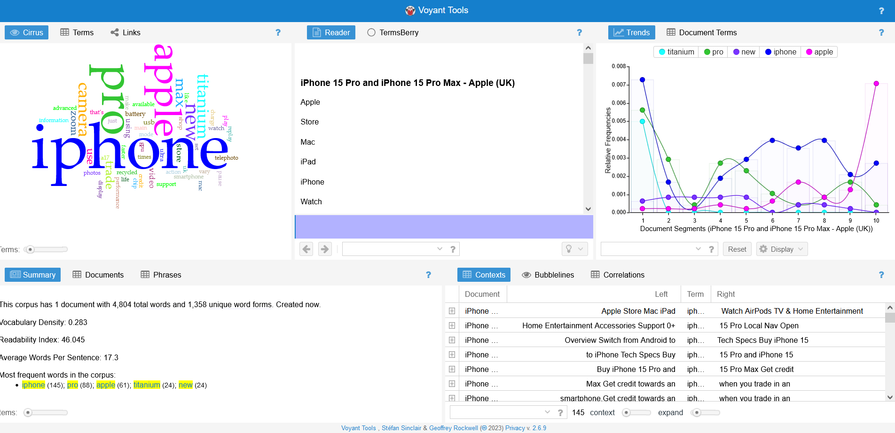
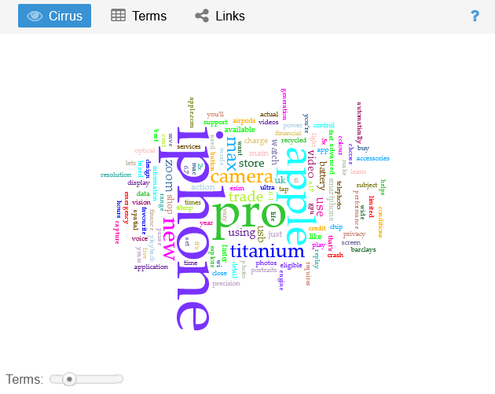
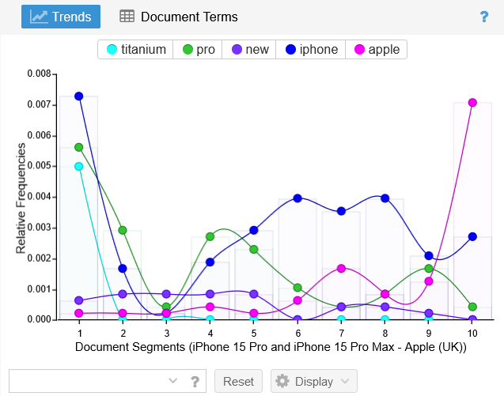
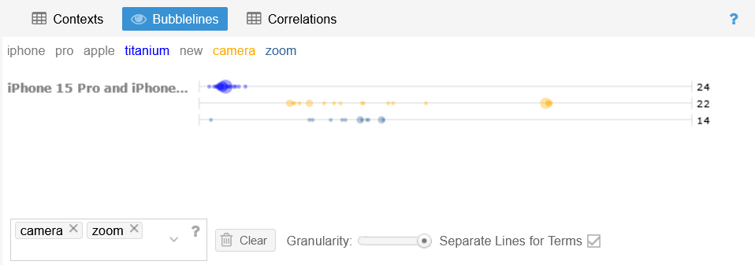
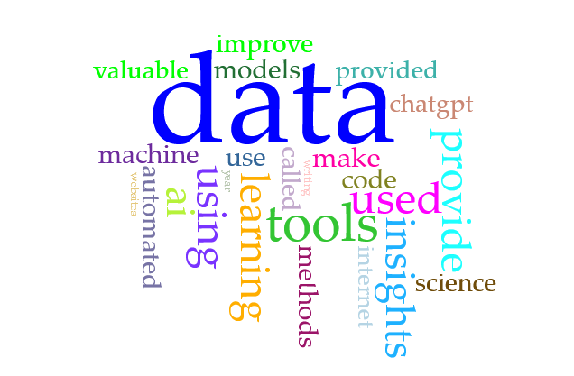

I read over the following:
| 1. ACCURACY | Inaccuracies show a carelessness that few professionals or organisations can afford in a competitive, global marketplace. Attention to accuracy is therefore paramount to web writers. |
| 2. ACTIVE VOICE | Avoid using passive voice construction when you can, unless you need to obscure the person committing an action; e.g.:
|
| 3. LIMIT BIASES |
|
| 4. CLARITY | Use words that your audience will recognise, and use them correctly. Be careful of jargon and technical terminology, and provide definitions if necessary. |
| 5. CONCISENESS | Avoid wordiness – web readers’ impatience is documented and scientifically proven! |
| 6. CONVERSATIONAL AND SMOOTHLY FLOWING PROSE |
|
| 7. CORRECTNESS | Poor grammar, and words used incorrectly, make both the writer and the organisation appear ignorant and sloppy.
Common mistakes:
|
| 8. PARALLELISM |
|
| 9. POSITIVE VOICE |
Be mindful of downbeat words or words that have a negative connotation. If necessary, rephrase in a positive way. E.g.:
|
| 10. STRONG NOUNS AND VERBS |
Instead of… Instead of… |
| 11. SENTENCE VARIETY |
|
| 12. SIMPLE WORDS |
Prefer more recognisable words over showy words. E.g.:
|
| 13. SHORTER PARAGRAPHS | Long paragraphs are maybe good for essays, but can scare web readers! Opt for no more than 6-8 lines for web paragraphs – remember the research on visitors’ attention span. |
| 14. TONE AND VOICE |
Adjust your writing attitude to the task at hand. Tone and voice are tied to the intended audience and the purpose of a website. E.g.:
|
I chose the Apple UK website to evaluate against the 14 professional writing characteristics.
| 1. ACCURACY | This is the manufacturer's website so it's expected to be accurate and informative about its own products. It succeeds in this regard by providing a page of technical specifications for people to check that want more detail or to check the facts - apple.com/uk/iphone-15-pro/specs |
| 2. ACTIVE VOICE | Active voice is used successfully to build a connection with the customer. Words like 'we' and 'our' are used to refer the the brand. The reader is addressed as 'you', as if Apple are having a conversations with the customer. |
| 3. LIMIT BIASES |
|
| 4. CLARITY | "iPhone 15 Pro is the first iPhone to feature an aerospace‑grade titanium design, using the same alloy that spacecraft use for missions to Mars." As seen here, Apple provide clarity on the material of titanium. Instead of lauching into jargon about it's physical properties, they compare it to the spacecraft used in NASA's missions to Mars, something that the majority of people will be familiar with. |
| 5. CONCISENESS | As shown below, Apple breaks up its text into concise chunks that are easy to digest by using many small paragraphs and lists. This makes it easier for the reader to pick out information they deem relevant in the phone for them.  |
| 6. CONVERSATIONAL AND SMOOTHLY FLOWING PROSE |
|
| 7. CORRECTNESS | No evident spelling or grammer mistakes. |
| 8. PARALLELISM | "Enter A17 Pro. Game‑changing chip. Groundbreaking performance." Parallelism is used to deliver a punch on the key features. |
| 9. POSITIVE VOICE | When discussing battery life, the performance is positively emphasised - 'Up to 29 hrs.' They do not say 'Only 29 hrs' or 'The battery will run out after 29hrs.' This technique is used throughout. |
| 10. STRONG NOUNS AND VERBS | Apple uses simple but bold sentences like "A camera that captures your wildest imagination." |
| 11. SENTENCE VARIETY | They begin paragraphs and sentences with a variety of phrases, questions and words. |
| 12. SIMPLE WORDS | Apple prioritises simple words over showy words. Any technical or more complicated terms are always explained with a simile or additional information. |
| 13. SHORTER PARAGRAPHS | Text is used sparingly in combination with videos and large pictures to keep the readers' attentions. |
| 14. TONE AND VOICE | Tone is kept professional but friendly. |
In reference to the Assess step of the AWE process above, I feel I am very ready to write about my website.
Part One
I analysed the Apple iPhone 15 Pro page using Voyant Tools:
Part Two
I explored the results from Voyant Tools to analyse my resource. Cirrus tab: High-frequency words could be used to infer what Apple thinks is the most important features of the new phone. 'Titanium' is used 24 times. This material can be seen is a big selling point due to its strength-to-weight ratio. 'Camera' and 'Zoom' are used 22 and 14 times - high-quality cameras have always been a strong selling point for iPhones.
Trends tab: this shows the flow of the text. 'Titanium' is mentioned heavily at the beginning of the text, showing that Apple open with that as the main feature of the phone. 'Camera' is mentioned a lot in the middle of the web page, showing it is 2nd or 3rd priority.
Bubblelines tab: 'Apple' is mentioned more (61 times in total) towards the end of the page as they link the iPhone into their brand identity and show their other products and payment plans.
Part Three
Comparing my analysis in the IL task above to the analysis in this task, the results are very different. The 14 points from the IL task analyse the writing style in a more high-level way, looking at overall tone and and structure. Whereas Voyant Tools analyses the content of the writing - the text - in a more in-depth way. Both are useful in combination.
My target audience are my peer group of students or young professionals seeking a career in the tech industry. Predominantly male, 20-30 years old.
Key points from my narrative are the opening scene - introducing data science. And introducing AI towards the end of the narrative. I will write a sample paragraph for each below:
We are surrounded by more data than we can comprehend. The average internet user creates over 1.7 megabytes per second. This amounts to more than 40 trillion gigabytes per year.
Now that we have explored the fundamentals of data science, we should turn our attention to what AI tools are currently used in the industry. Many aspects of data science are increasingly being automated using automated machine learning to improve productivity. This is called AutoML. And once analytic models have been developed, their accuracy is monitored by machine learning operations tools called MLOps.
Reflection
| 1. ACCURACY | I know my text is reasonably accurate as I used various sources to back up my claims. However, I did not check how credible these were, as some were just online articles. To improve upon this in my final version, I will add references and check credibility of my sources. |
| 2. ACTIVE VOICE | I used active voice a lot with words 'we,' 'us,' and 'our.' I hope this will make the reader engage more with the text. |
| 3. LIMIT BIASES | My paragraphs contain no biases or stereotypes. I even mention the ethics of AI and how we need to aim to actively avoid biases. |
| 4. CLARITY | I think I have achieved this well as I avoid jargon and explain all abbreviations. |
| 5. CONCISENESS | I tried to break my paragraphs up into smaller sections to make them easier to read. I hope this will be easier to layout on my final website as well. I took inspiration from the Apple website. In my first paragraph I even highlight key facts and phrases in bold. |
| 6. CONVERSATIONAL AND SMOOTHLY FLOWING PROSE | I used active voice and contractions to provide a conversational tone. I tried to layout the text into a flow of information - each section building on what the last paragraph taught the reader. |
| 7. CORRECTNESS | No evident spelling or grammer mistakes. I used Microsoft Word's spell checker. |
| 8. PARALLELISM | I did not use parallelism and that is what I could improve upon. I may need to include this when I re-write the text for my final website. |
| 9. POSITIVE VOICE | While AI is providing competition for data scientists, and is causing some to worry about their career security, I focus the text on what data scientists can still do that AI can't. And how to incorporate these AI tools to make your job even more efficient and therefore valuable in the industry. |
| 10. STRONG NOUNS AND VERBS | I tried to keep my adjective and adverb use to a minimum to let the facts speak for themselves. |
| 11. SENTENCE VARIETY | I varied the beginning of all my paragraphs to ensure they don't start with the same word. I also used a mix and long a short sentences with various punctuation, but nothing to complicated or wordy. I beleive I achieved this well. |
| 12. SIMPLE WORDS | I prioritised the use of simple words and attempted to explain any technical concepts for my readers. |
| 13. SHORTER PARAGRAPHS | My paragraphs are both broken up into 3 or 4 smaller paragraphs to try to engage the reader more. The larget is only about 70 words. |
| 14. TONE AND VOICE | Tone is kept professional but friendly. I would like to try and make this even more informal on the final website. I need to work to find a way to do this while still keeping the style professional. |
Discussion & Analysis
awaiting discussion...............................
You can see the results of my findings above. Below is a link to download my updated moodboard that incorporates thoughts on text. I am using Git to upload to GitHub every week, so I will have weekly versions of my moodboard as it develops.
Moodboard